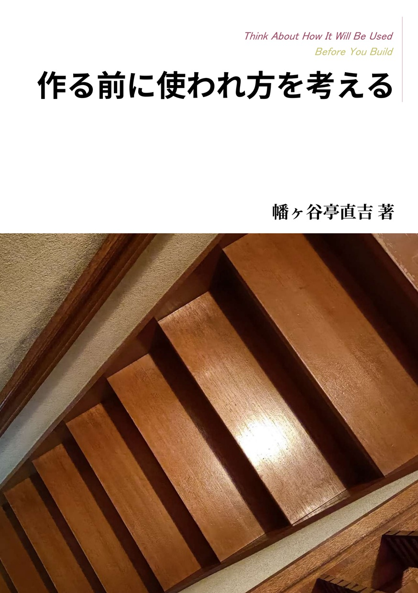

Doujinshi / Product Thinking
作る前に使われ方を考える
エンジニアリングへのオーナーシップを取り戻すために辿り着いた、「作る前に使われ方を考える」という極私的なプロダクト思考を主題とした技術同人誌です。
書影

本について
紹介文
本書は著者が、エンジニアリングへのオーナーシップを取り戻すために辿り着いた「作る前に使われ方を考える」という極私的なプロダクト思考を主題とした技術同人誌です。
作ることは目的ではなく、アウトカム（行動・価値の変化）を実現するための手段です。使われ方を無視して手段先行で作ると、不要な実装が増え、継続的な成長が阻害されます。
本書は、この「使われ方」を深く掘り下げ、作る人自身が主体的に考えることの重要性を説きます。作る前に使われ方を想定し、意味のあるものだけを作る選択をすることで、作り手の経験は学びに変わり、承認や自己実現の欲求が満たされます。
価値創出の実感を取り戻し、働けば働くほど楽しいエンジニアリングのためのヒントとなれば幸いです。